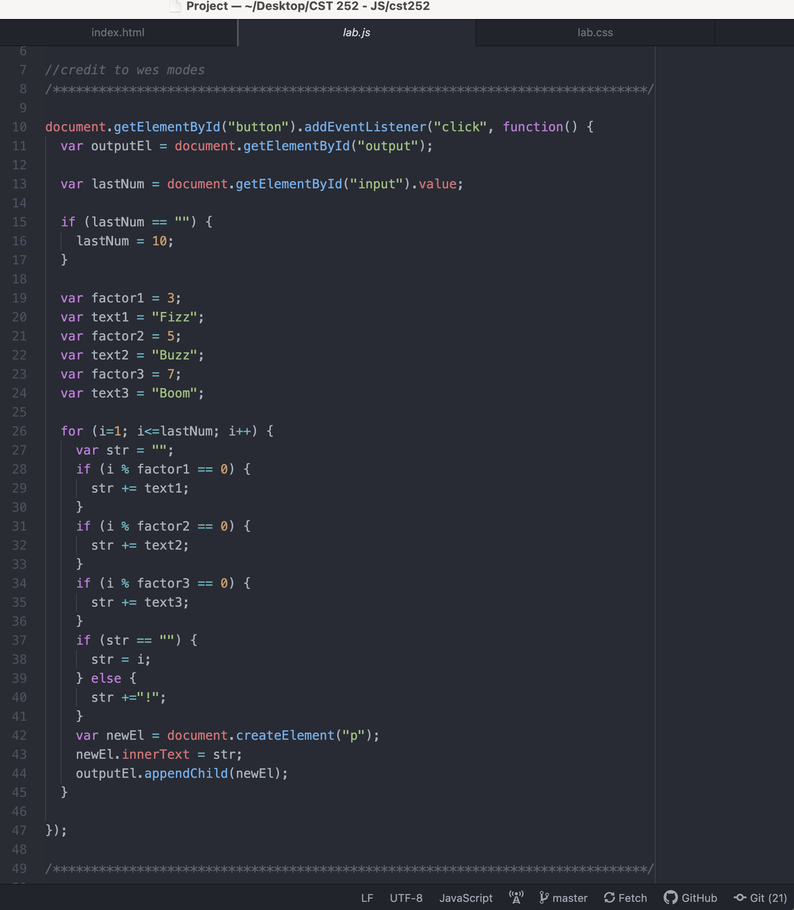
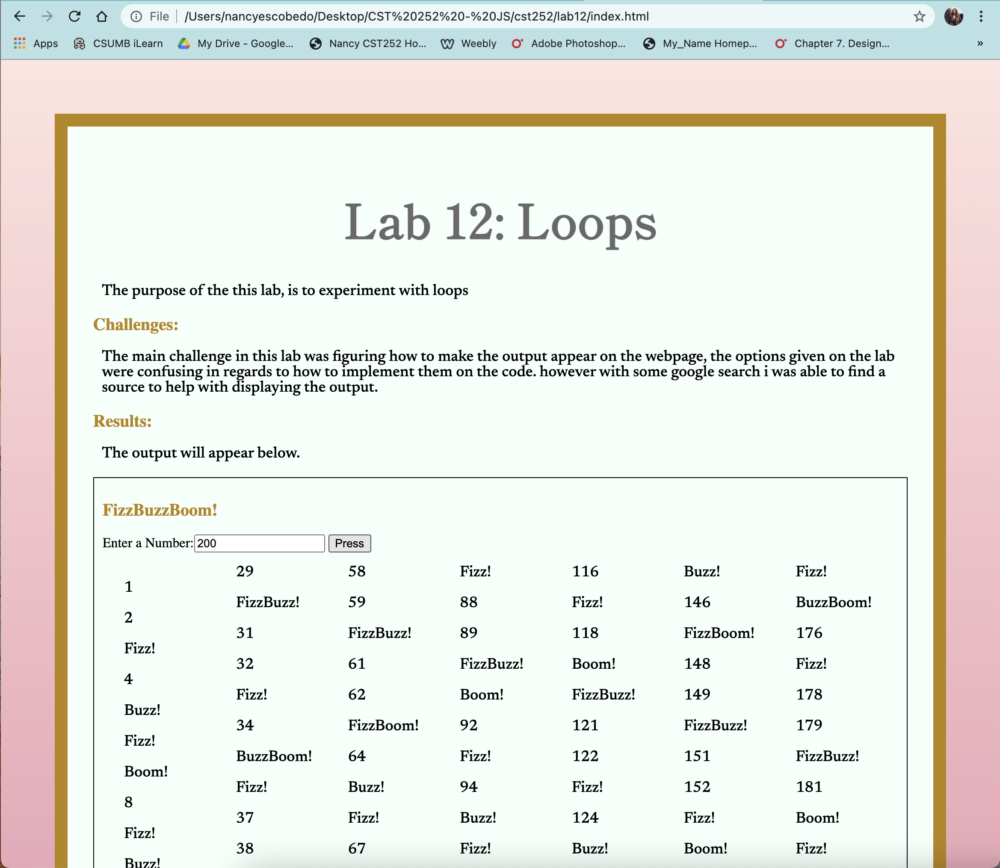
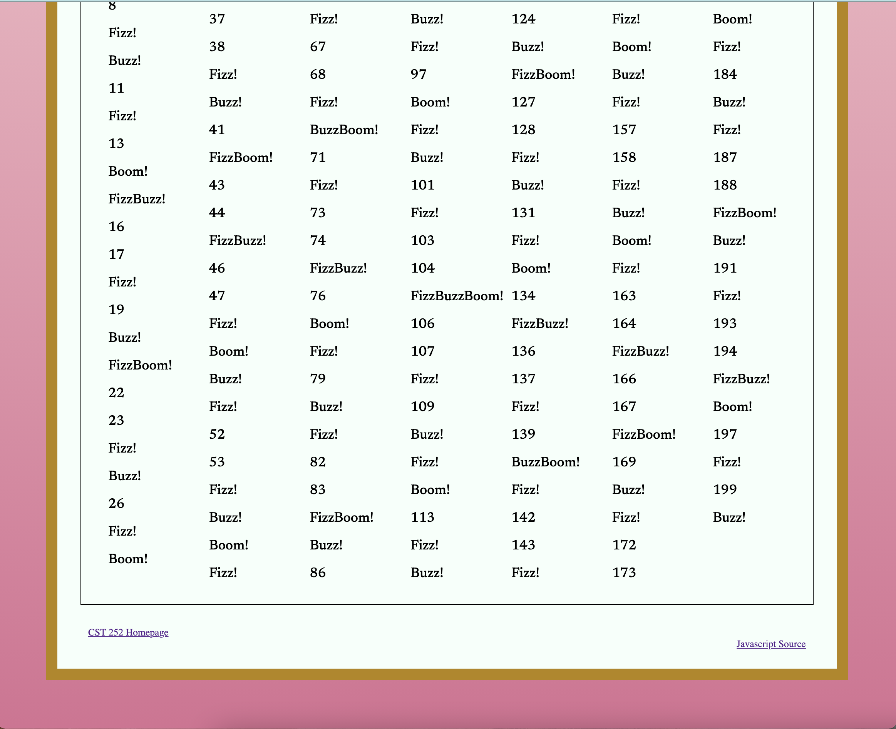

Lab 13: Debugging
The purpose of the this lab, is to use our debugging knowledge to fix old assignments
Challenges:
There weren't many challenges durning this lab. Before turning previous labs I use inspect console to check for any errors. However it didn't hurt to check every old JavaScript Labs again.
Results:
The output will appear below.
DEBUGGING
There was the the previous lab that i wanted to fix. It didn't have problems and it was doing what it was suppose to. But the code that I wrote was written different than how it was asked to do. However Wes clarfied by going over the lab, it helped me understand better. I rewrote the javascript code by using wes's code since it looked more efficient while fixing any bugs along the way.
Screenshot of Lab 12 on atom
Screenshot of Lab 12 on the browser
 